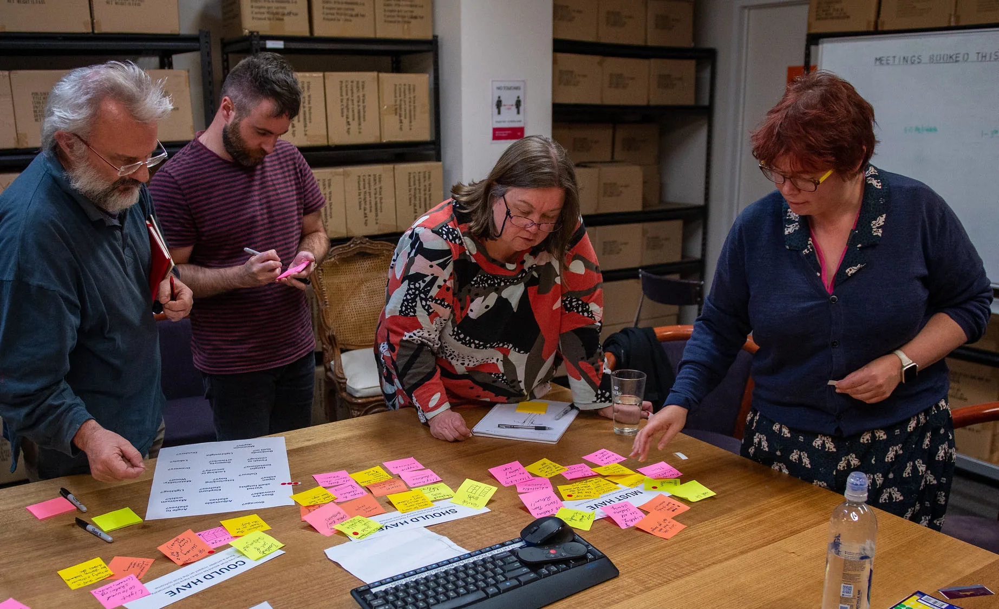
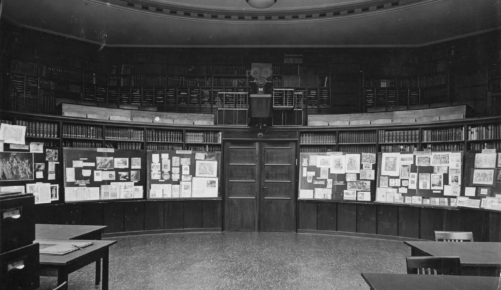
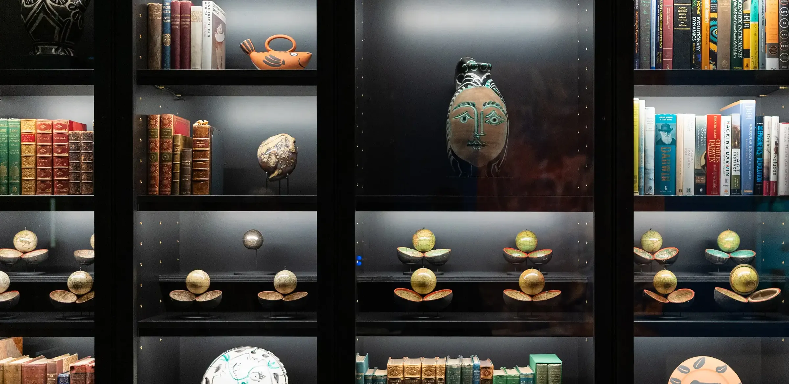
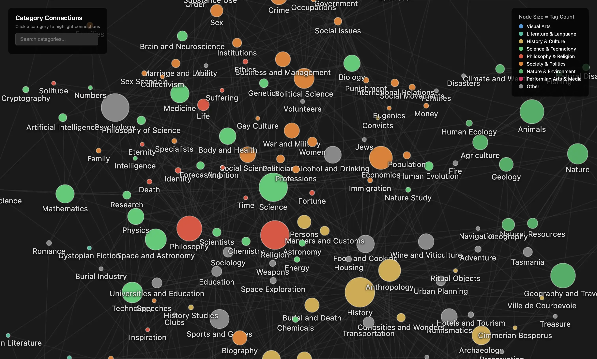
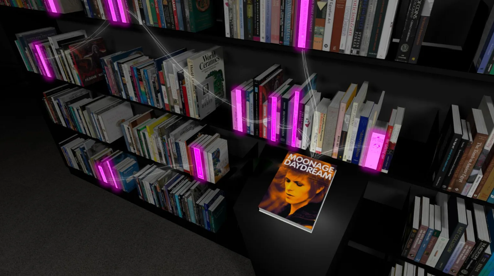

Mona Library
Hobart, Australia
A simple yet bold brief: Design a system where books can move arbitrarily but we still know where they are.
Traditional libraries rely on classification systems that organise knowledge into stable hierarchies. At Mona, the ambition is almost the opposite. The library is conceived as a living collection where books can move freely across the shelves, forming new relationships over time. Instead of a permanent order, the library becomes a field of associations shaped by curiosity, interpretation, and discovery.

An excellent quote from Borges I uncovered in my research.

Early workshop with the Mona library team in Hobart, mapping out requirements and features for the new library system.
The philosopher Ernst Cassirer once described the Warburg Library as "a catalogue of problems," where books were arranged so that ideas from different fields might collide. The collection later became one of the intellectual foundations of London's great research libraries, but its real legacy was the idea that a library could be organised around thought rather than classification.

Aby Warburg, Ovid Exhibition in the Reading Room of the Kunstwissenschaftliche Bibliothek Warburg, Hamburg, 1927.
At Mona, the same spirit animates the space. Art, philosophy, science, myth, politics, and literature sit side by side, reflecting the wide-ranging curiosity of the museum's founder. The result is something closer to an exploration than a conventional museum and library visit. Books and objects

Displays inside of Mona featuring globes, ceramics, artworks and books, 2023
Behind the scenes, a new digital infrastructure allows the collection to remain fluid without losing track of the books themselves. The system quietly maintains a living map of the library, allowing visitors and staff to navigate the evolving landscape of books. This underlying framework makes it possible for librarians to act less as custodians of order and more as curators of ideas, shaping new arrangements and perspectives across the collection.

In this way the Mona Library becomes both a reflection of its owner's intellectual world and an invitation for visitors to enter it. As Alberto Manguel observed, what defines a library is not simply the titles it contains, but the web of associations they create together. At Mona, those associations are allowed to grow, shift, and multiply, turning the library into a place where knowledge is not merely stored but continually rediscovered.

The project is currently in development and will open to the public in 2026.